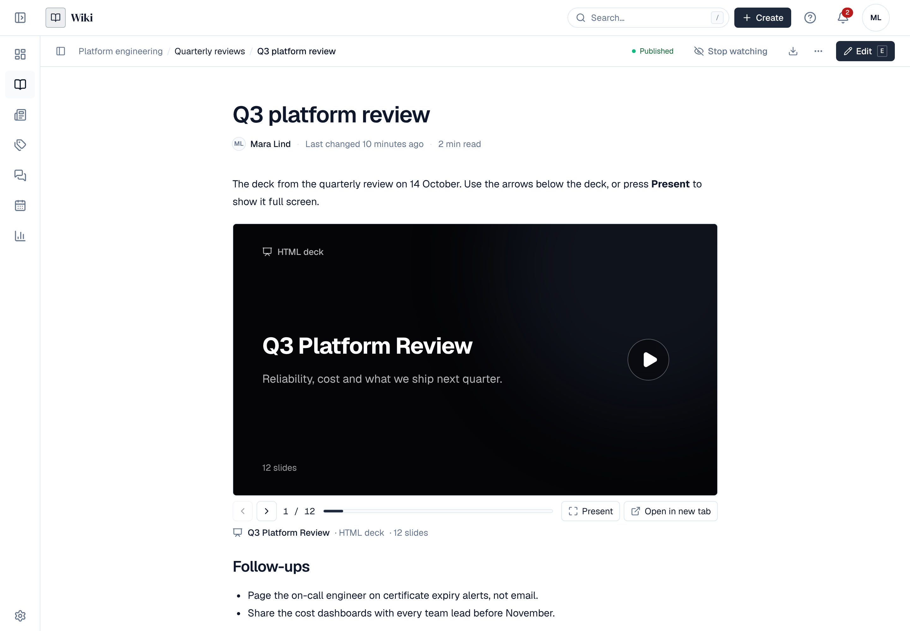
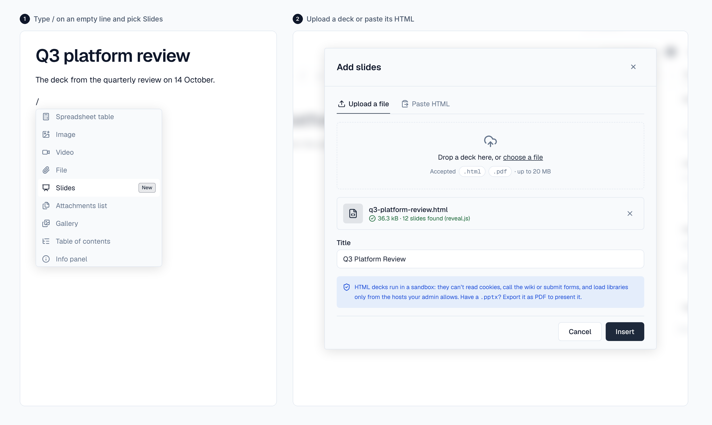
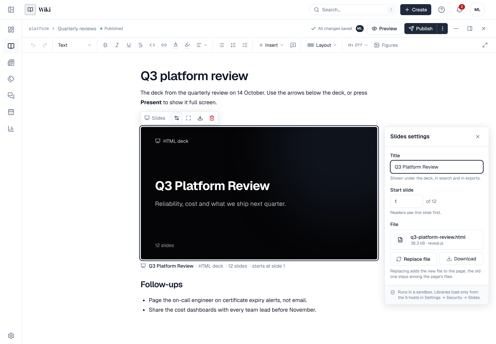
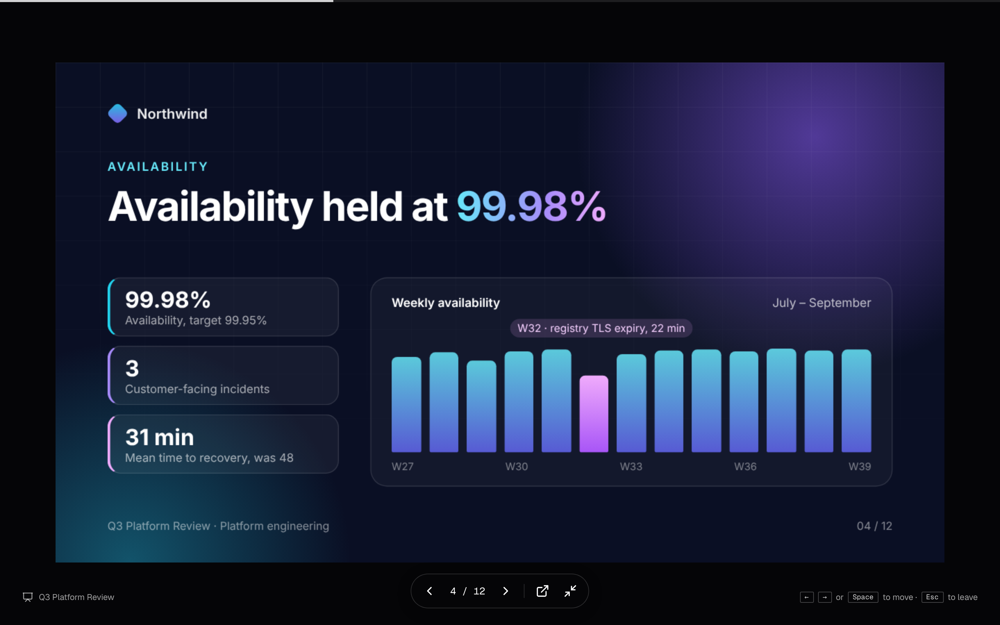
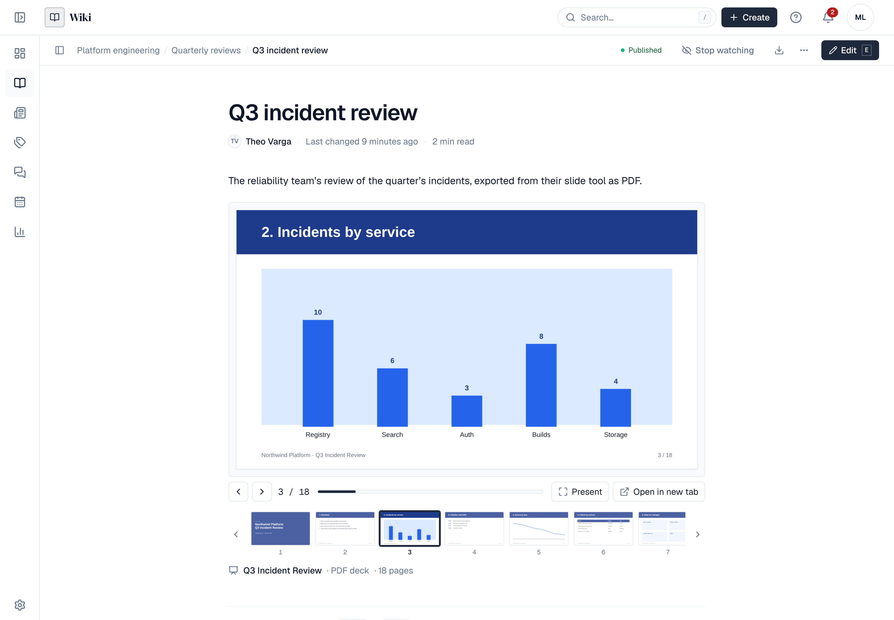
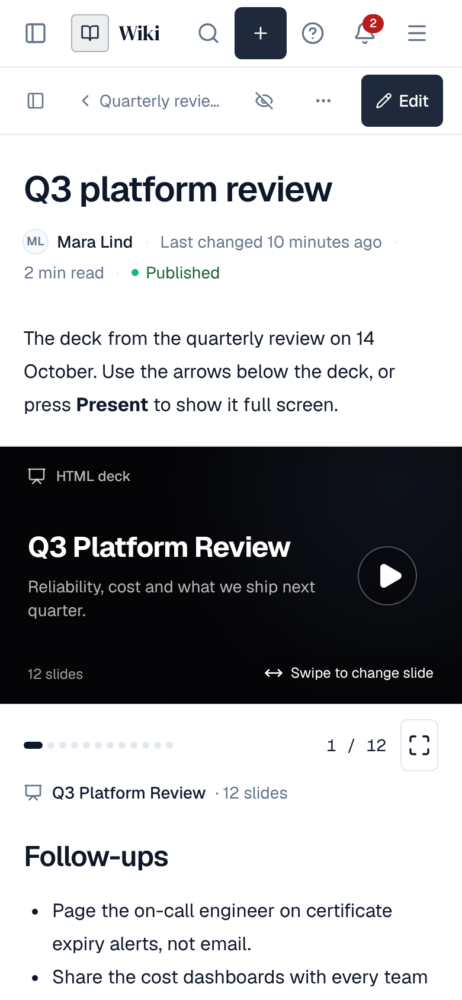
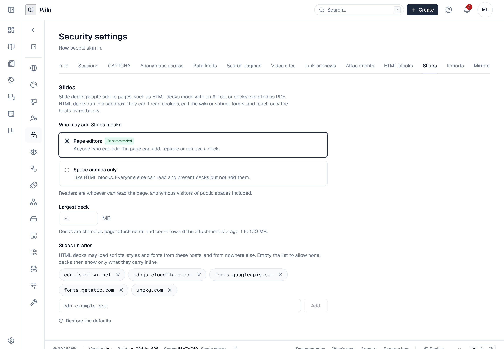

1. Overview
A Slides block puts a slide deck in a page: an HTML deck, such as the ones AI tools, reveal.js or Marp write, or a deck exported as PDF. Readers step through it under the page's text with the Wiki's own controls, or press Present to show it full screen.

- Below the deck: previous and next, the slide counter (3 / 12), a progress bar, Present and Open in new tab. Once the deck has focus, the arrow keys work too.
- An HTML deck shows its title and first lines until someone presses play; only then does the deck load and run.
- Under it, the caption: the title the editor gave it, the kind of deck and its slide count.
2. Add a deck
People who edit a page can add decks, unless an administrator has kept them to space admins (below).

- Insert it — Type / on an empty line and pick Slides, or use Insert → Slides. Dropping a .html file on the page opens the same dialog.
- Give the deck — Upload a file takes an .html or .pdf file, up to the size your administrator allows (20 MB unless changed). Paste HTML takes the deck's HTML, for example straight from an AI tool.
- Check what was found — The Wiki reads the deck and says how many slides it found and how (reveal.js, Marp, one element per slide). A deck whose slides it can't tell apart still plays with its own keys; the counter then shows a dash.
- Title and insert — Change the title if you like (it is shown under the deck, found by search and printed in exports), then Insert.
PowerPoint, Keynote and OpenDocument decks (.pptx, .ppt, .key, .odp) aren't taken: export them as PDF from your slide tool and add the PDF. Attach the original file with a File block if people need it.
3. Change a deck
In the editor a deck is shown as a still: it doesn't run while you type. Select it for a bar with settings, present, download and remove.

| Setting | What it does |
|---|---|
| Title | Shown under the deck, in search and in exports. |
| Start slide | The slide readers see first, such as the agenda of a long deck. |
| Replace file | Uploads a new version of the deck in its place, of the same kind (an HTML deck for an HTML deck, a PDF for a PDF): the block keeps its file, and published versions of the page keep showing the deck they were published with. A deck of the other kind is added as a new file. See Versions of a file. |
| Download | The deck's file, as it was uploaded. |
The maximize button in the bar plays the deck full screen, so you can check it without leaving the editor.
4. Make slides with Kee
Kee can write a deck from a page for you, and change a deck you have. It writes the slides' text and the Wiki draws them in its own light or dark look, so every deck Kee makes looks the same and nothing in it runs. You see every slide before anything is added to the page.
You need to be able to add decks (the setting below) and to use Kee in the editor. Each run counts as one request against your daily limit.
- Open the page in the editor, rest the pointer on a text section and open its menu (the handle at its right).
- Select Make slides… in Kee's group.
- Choose This section or The whole page, and say what the deck is for if you like (for example "a ten-minute update for the leadership team"). Slides asks for about that many; leave it empty and Kee decides. Add an Audience and pick Light or Dark, then Make slides.
- Read the slides Kee wrote. Speaker notes are shown under a slide, never on it.
- Select Insert to add the deck under the section, Discard to drop it, or Try again.

- Slides use six layouts: a title slide, section dividers, bullet points, two columns side by side, a quote, and a picture. A picture is always one of the page's own images.
- Kee keeps names, numbers and dates as the page has them and adds no facts of its own, but check them before you insert the deck.
- The deck is an ordinary HTML deck of the page: present it, download it or replace its file like any other.
5. Change a deck with Kee
- Select the deck in the editor, then the Edit with Kee button (the sparkle) in its bar.
- Say what to change, for example "add a slide on costs and shorten the rest", and pick a look or keep the deck's, then Change.
- Each slide shows how it changed: Changed, New or Removed; unchanged slides have no mark.
- Select Replace to put the new deck in place of the old one, or Keep original.

Replace saves the new deck as a new version of the same file, so published versions of the page keep the deck they were published with. A deck made with another tool (an AI tool's HTML, reveal.js, Marp) is rebuilt as a Wiki deck from its slides' text, with what you asked for; leave the box empty to rebuild it as it is. A PDF deck has no text Kee can change.
You can also ask Ask Kee to make or change a deck on a page: it proposes the deck as slides you look at before Apply adds it to the page's draft.
6. Present
Present shows the deck on the whole screen. A thin bar at the top shows how far through the deck you are; the controls at the bottom fade after 2 seconds and come back when the pointer moves or a key is pressed. ←, → or Space move, Home and End jump to the first and last slide, and Esc leaves.

7. PDF decks
A PDF deck is shown by the Wiki's own PDF viewer, one page a slide, with a strip of page thumbnails below the controls: click one to jump to it. Nothing in a PDF runs, so it is the safest kind of deck.

8. On a phone
On a phone the deck is as wide as the screen. Swipe to move between slides (a hint says so the first time), and the full-screen button turns it to landscape where the phone allows.

9. What HTML decks can do
An HTML deck runs in a sandbox, like an HTML block:
- It can't read the Wiki, its cookies or the page around it, can't submit forms or open pop-ups, and never acts as the person reading it.
- It can load scripts, styles and fonts only from the hosts your administrator lists in Settings → Security → Slides, and from nowhere else. Anything else it needs must be in the file.
- The Wiki draws the controls outside the deck and steps it with messages the deck can't use for anything else.
- A deck shows only in a page: an HTML file attached to a page any other way is never served as a page.
Readers are whoever can read the page, visitors who aren't signed in included on public spaces. Word and PDF downloads print the deck's title, its kind and slide count in its place. Copying a page or starting one from a template keeps its decks.
10. For administrators
Settings → Security → Slides (settings:write) sets who adds decks, the largest deck and the hosts HTML decks may load from. Save with the Security page's Save bar.

| Setting | Default | Effect |
|---|---|---|
| Who may add Slides blocks | Page editors | Page editors: anyone who can edit the page adds, replaces or removes a deck. Space admins only: like HTML blocks. Everyone else can still read and present decks. |
| Largest deck | 20 MB | 1 to 100 MB. Decks are page attachments and count toward the attachment storage. |
| Slides libraries | cdnjs.cloudflare.com, cdn.jsdelivr.net, unpkg.com, fonts.googleapis.com, fonts.gstatic.com | The only hosts HTML decks may load scripts, styles and fonts from, up to 20. Empty the list to allow none: decks then show only what they carry. Restore the defaults brings back the five. |
Adding a deck raises the blocking page.slides.create event, so a policy can, for example, refuse HTML decks in some spaces; changing the setting raises slides_settings.update. Both are in the audit log. See Events.
Confluence imports need nothing new: Confluence has no slides macro, so PowerPoint and PDF files stay file cards, and an editor can replace a PDF's card with a Slides block.
11. API
| Method | Path | Who | What |
|---|---|---|---|
| GET | /api/spaces/{key}/slides | Read the space | Whether you may add decks here (mayAdd), the largest deck (maxBytes), and the library hosts for people who edit pages |
| POST | /api/spaces/{key}/pages/{id}/slides | mayAdd | Multipart file: an HTML file or a PDF; a replace field (one of the page's decks) before it makes it a new version of that deck. Answers what was found: attachment, version, format, engine, slides, texts, title. Refused with slides_not_allowed, unsupported_deck or deck_too_large |
| POST | /api/spaces/{key}/pages/{id}/slides/build | Edit the page and mayAdd | JSON {outline, replace?}: renders a slide outline (title, theme light or dark, slides of the layouts title, section, bullets, columns, quote, image, each with optional notes) into an HTML deck of the page, a new version of replace when given. Answers the deck as the upload does, with the outline kept. Refused with invalid_slide_outline, deck_images_too_large or slides_not_allowed |
| GET | /api/spaces/{key}/pages/{id}/slides/{attachment}/frame | Read the page | An HTML deck as the sandboxed page the block frames; not_a_deck for a file not added as a deck |
| GET | /api/wiki/slides-settings | settings:write | {editors, maxMb, hosts} |
| PUT | /api/wiki/slides-settings | settings:write | {editors, maxMb, hosts}; editors is page_editors or space_admins. Refused with invalid_slides_editors, invalid_slides_max_size, invalid_slides_host or too_many_slides_hosts |